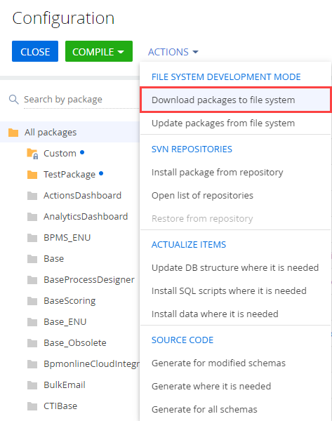
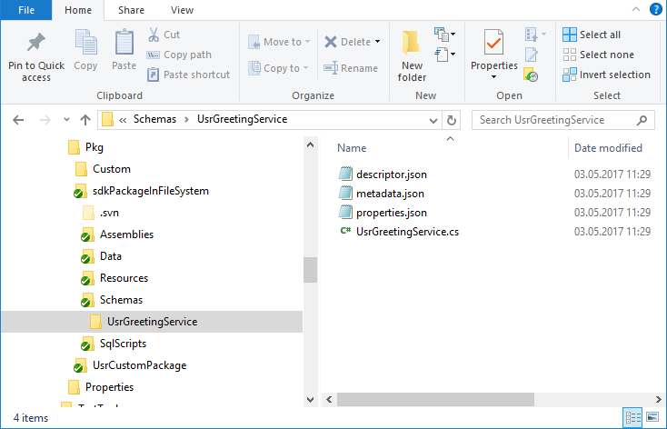
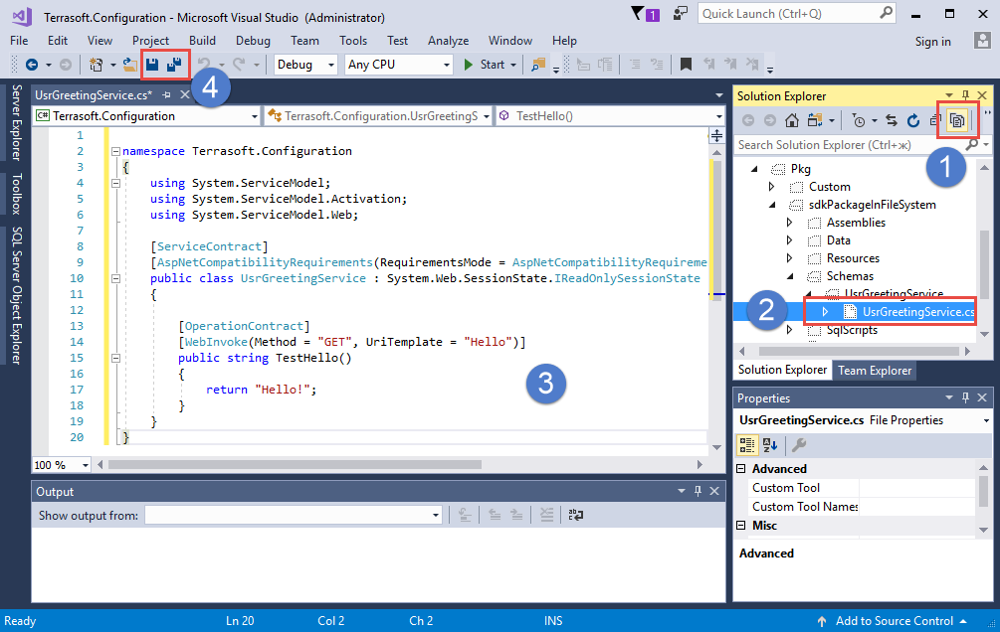
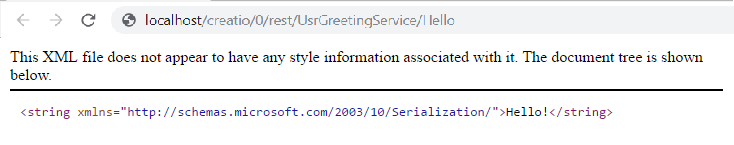
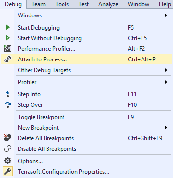
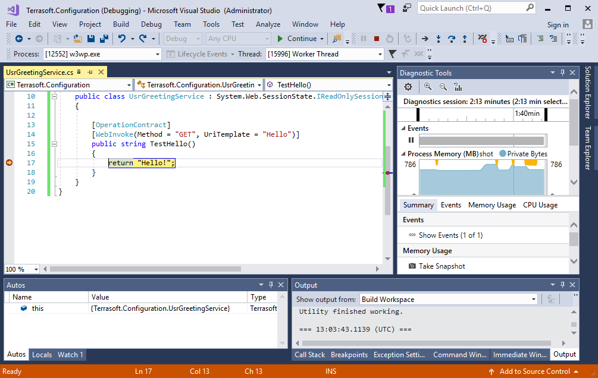

Алгоритм реализации примера
1. Выполнить предварительные настройки
Настройте IDE для разработки в файловой системе.
2. Создать, получить или обновить пакет из репозитория SVN
Создайте в разделе Конфигурация (Configuration) пользовательский пакет sdkPackageInFileSystem с использованием или без использования SVN.
3. Создать схему Исходный код
В пакете создайте схему Исходный код:
- Код (Code) — "UsrGreetingService";
- Заголовок (Title) — "UsrGreetingService";
- Пакет (Package) — "sdkPackageInFileSystem";
4. Выполнить разработку решения в Visual Studio
- Выгрузите существующие схемы из базы данных в файловую систему.
Для этого в выпадающем списке Действия (Actions) на панели инструментов раздела Конфигурация (Configuration) выполните действие Выгрузить пакеты в файловую систему (Download packages to file system).
В результате в файловой системе в каталоге Pkg\sdkPackageInFileSystem\Schemas\ появится файл исходного кода схемы UsrGreetingService.cs. При этом в каталог Autogenerated\Src будет помещен сгенерированный системой файл схемы UsrGreetingServiceSchema.sdkPackageInFileSystem_Entity.cs.
 - Для выполнения разработки в Visual Studio откройте решение Terrasoft.Configuration.sln.
- В проводнике решения Visual Studio включите отображение всех типов файлов (1), откройте файл UsrGreetingService.cs (2) и добавьте нужный исходный код (3).

Пример исходного кода, который нужно добавить в содержимое файла UsrServiceGreeting.cs для реализации пользовательского web-сервиса.
5. Сохранить, скомпилировать и отладить созданный исходный код
- После того как исходный код был изменен, прежде чем выполнить его компиляцию и отладку, сохраните его (4).
Обычно это выполняет Visual Studio автоматически, но поскольку компилятор Visual Studio не используется, эту операцию разработчику нужно выполнять самостоятельно.
- После сохранения скомпилируйте измененный исходный код командой Build Workspace или Rebuild Workspace. В случае успешной компиляции разработанный веб-сервис становится доступным.

- Для того чтобы начать отладку, присоединитесь к процессу сервера IIS, в котором запущено приложение. Для этого выполните команду меню Debug —> Attach to process.

В открывшемся окне в списке процессов выберите рабочий процесс IIS, в котором запущен пул приложения Creatio.
После присоединения к рабочему процессу IIS выполните повторную компиляцию.
Далее можно приступить к процессу отладки средствами отладчика Visual Studio: можно установить точки останова, просматривать значения переменных, стек вызовов и т.д.
Например, после установки точки останова на строке возврата из метода TestHello(), повторной компиляции приложения и выполнения запроса к сервису отладчик остановит выполнение программы на точке останова.
